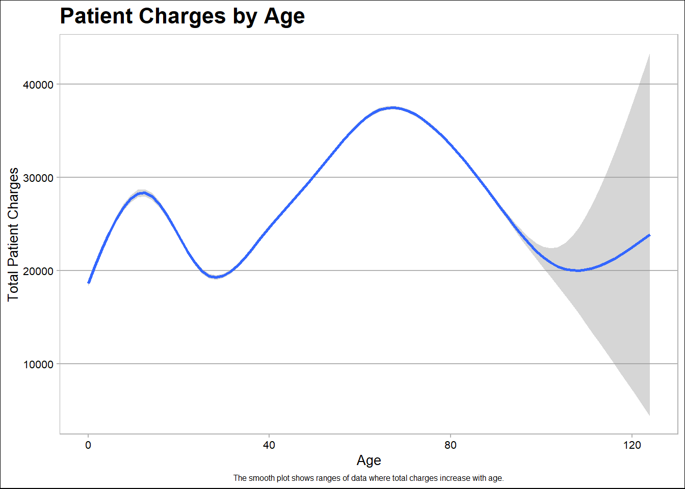

# find the number of rows of the data
n = nrow(df)
# subset 1000 rows of the data
df1 = df[sample(1:n, 1000), ]MATH 421 - Midterm Projects: RI Hospital Data
Instruction
The midterm has two components: the Rmarkdown notebook (html) and the presentation. We will do the presentation in class. Post both the notebook and the presentation on your Github page.
The notebook: The notebook should be created using rmarkdown or Quarto (like other assignments). The notebook should have a title.
The Presentation: Present your results in 5-10 minutes. To make the presentation using Rmarkdown, do the follows:
- In Rstudio -> File -> New File -> R markdown
- In the left panel, click to Presentation -> Click OK
- Now you have an Rmarkdown that can be knitted to be a html presentation You can also use the Rmd templates of the class slides.
You can also use Quarto to create the presentation: In Rstudio -> File -> New File -> Quarto Presentation…
You do not need to rerun all the codes for the presentation. For example, to show the model comparison, you just need to show the image of the model comparison instead of running all the models again.
To inset an image in a slide, use
To scale images, you can use
{width="60%"}or follow these below instructions.https://bookdown.org/yihui/rmarkdown-cookbook/figure-size.html
http://zevross.com/blog/2017/06/19/tips-and-tricks-for-working-with-images-and-figures-in-r-markdown-documents/
To turn off message and warning of a code cell, use:
{r, message=FALSE, warning=FALSE}for the cell.To turn off message and warning of a code cell, use:
{r, message=FALSE, warning=FALSE}for the cell.
What to present:
Present Part 2 - Visualization
Present Question Question 4, 5 and 6 in Part 3.
Present any errors/challenges you run into and how you fix/overcome them.
Data:
The data for the mid-term project is the Rhode Island Department of Health Hospital Discharge Data. Each row of the data presents a patient.
Link: https://drive.google.com/open?id=15QNBf6YYKocK2nNIfpKDer58kQnCPNZJ
Notice
- Since this is a large dataset, you could try to run the codes on the smaller dataset, which is a portion of the original dataset before running the codes on the original data. To create a random subset of the data you could use
I. Data Wrangling
Download the data file
hdd0318cy.sas7bdat.Use
read_sasin libraryhavento read the data.library(haven) data <- read_sas('hdd0318cy.sas7bdat')Filter the data to have only patients of the year 2018 (
yod==18)library(tidyverse)── Attaching core tidyverse packages ──────────────────────── tidyverse 2.0.0 ── ✔ dplyr 1.1.3 ✔ readr 2.1.4 ✔ forcats 1.0.0 ✔ stringr 1.5.0 ✔ ggplot2 3.4.3 ✔ tibble 3.2.1 ✔ lubridate 1.9.2 ✔ tidyr 1.3.0 ✔ purrr 1.0.2 ── Conflicts ────────────────────────────────────────── tidyverse_conflicts() ── ✖ dplyr::filter() masks stats::filter() ✖ dplyr::lag() masks stats::lag() ℹ Use the conflicted package (<http://conflicted.r-lib.org/>) to force all conflicts to become errorsdata %>% filter(yod == 18)# A tibble: 131,478 × 135 yod payfix pay_ub92 age sex raceethn filler1 filler2 provider moa <dbl> <dbl> <dbl> <dbl> <chr> <chr> <chr> <chr> <chr> <dbl> 1 18 NA 9 0 1 1 "" "" 7214 1 2 18 NA 2 76 2 1 "" "" 7214 1 3 18 NA 6 50 2 1 "" "" 7214 12 4 18 NA 4 0 1 7 "" "" 7214 1 5 18 NA 13 0 1 1 "" "" 7214 12 6 18 NA 4 0 2 9 "" "" 7214 12 7 18 NA 4 0 2 1 "" "" 7214 1 8 18 NA 13 0 2 1 "" "" 7214 1 9 18 NA 1 70 2 1 "" "" 7214 1 10 18 NA 9 25 2 1 "" "" 7214 12 # ℹ 131,468 more rows # ℹ 125 more variables: yoa <dbl>, mod <dbl>, admtype <chr>, asource <chr>, # filler3 <chr>, dx1 <chr>, dx2 <chr>, dx3 <chr>, dx4 <chr>, dx5 <chr>, # dx6 <chr>, dx7 <chr>, px1 <chr>, px2 <chr>, px3 <chr>, px4 <chr>, # px5 <chr>, px6 <chr>, px7 <chr>, px8 <chr>, px9 <chr>, px10 <chr>, # preopday <dbl>, los <dbl>, filler4 <chr>, service <chr>, icu <chr>, # ccu <chr>, dispub92 <chr>, payer <chr>, drg <dbl>, trandb <chr>, …Select to work with only following variables:
workingVariables <- c("yod", "payfix","pay_ub92","age",
"sex","raceethn","provider","moa",
"yoa","mod","admtype", "asource" ,
"preopday" ,"los", "service" , "icu","ccu",
"dispub92", "payer" ,"drg","trandb",
"randbg","randbs","orr", "anes","seq",
"lab","dtest", "ther","blood","phar",
"other","patcon","bwght","total","tot" ,
"ecodub92","b_wt","pt_state","diag_adm","ancilar" ,
"campus","er_fee","er_chrg","er_mode","obs_chrg",
"obs_hour","psycchrg","nicu_day")
dataReduced <- data[workingVariables]Notice: You may want to save the current data to your computer for easy access later. To save the data file use write_csv(df, 'midterm.csv'), for example.
What are variables that have missing values?
library(tidyverse) df <- read_csv('midterm.csv', show_col_types = FALSE)Warning: One or more parsing issues, call `problems()` on your data frame for details, e.g.: dat <- vroom(...) problems(dat)Remove all variables with missing values.
df <- replace(df, df == ' ', NA) colSums(is.na(df))yod payfix pay_ub92 age sex raceethn provider moa 0 2211490 273447 25 3 146005 0 143682 yoa mod admtype asource preopday los service icu 0 143682 75 1451 1013351 60207 1190 1841 ccu dispub92 payer drg trandb randbg randbs orr 1841 728 0 3 0 0 0 0 anes seq lab dtest ther blood phar other 0 0 0 0 0 0 0 0 patcon bwght total tot ecodub92 b_wt pt_state diag_adm 0 2211490 0 0 1813849 1089600 415615 416392 ancilar campus er_fee er_chrg er_mode obs_chrg obs_hour psycchrg 282340 282342 282340 282340 556686 282340 751884 282340 nicu_day 2115216library(dplyr) df <- df %>% select(age, sex, moa, mod, los, admtype, campus, diag_adm, where(~!any(is.na(.))))library(tidyr) df <- drop_na(df)Refer to the data description in the file
HDD2015-18cy6-20-19.docx, which variable recording the month of admission?, which variable recording the month of discharge?table(df$moa) #month of admission1 2 3 4 5 6 7 8 9 10 11 142473 130257 143209 137856 140685 137957 139314 138090 135331 138498 132277 12 135464table(df$mod) #month of discharge1 2 3 4 5 6 7 8 9 10 11 140118 129964 143994 138157 141106 138450 138943 138570 134645 138606 132266 12 136592Which month admitted the most number of patients? Which month admitted the most number of male patients?
#The month that admitted the most number of patients is March. df %>% group_by(moa) %>% summarise(total_patients = n()) %>% arrange(-total_patients)# A tibble: 12 × 2 moa total_patients <dbl> <int> 1 3 143209 2 1 142473 3 5 140685 4 7 139314 5 10 138498 6 8 138090 7 6 137957 8 4 137856 9 12 135464 10 9 135331 11 11 132277 12 2 130257#The month that admitted the most number of male patients is March. df %>% group_by(moa) %>% summarise(malePatients = sum(sex == "1")) %>% arrange(-malePatients)# A tibble: 12 × 2 moa malePatients <dbl> <int> 1 3 61852 2 1 61464 3 5 60765 4 7 60666 5 10 59995 6 6 59825 7 8 59683 8 4 59430 9 12 59341 10 9 58344 11 11 57207 12 2 56343Which month has the most number of teenage female patients?
#The month that has the most number of teenage female patients is March. df$teenAges <- case_when(df$age <13 ~ 'child', df$age<=19 ~'teenager', TRUE ~ 'adult') df %>% filter(sex == 2, teenAges == 'teenager') %>% group_by(moa) %>% summarise(teenageFemales = n()) %>% arrange(-teenageFemales)# A tibble: 12 × 2 moa teenageFemales <dbl> <int> 1 3 3434 2 1 3419 3 5 3352 4 10 3293 5 4 3139 6 11 3138 7 12 3104 8 9 2982 9 7 2918 10 6 2857 11 2 2844 12 8 2772Which provider has the most number of female patients in October?
#Rhode Island Hospital (7205) has the most number of female patients in October. df %>% filter(sex == 2, moa == 10) %>% group_by(provider) %>% summarise(femalePatients = n()) %>% arrange(-femalePatients)# A tibble: 14 × 2 provider femalePatients <dbl> <int> 1 7205 16960 2 7214 16313 3 7210 8951 4 7204 8584 5 7202 4166 6 7213 4048 7 7206 4029 8 7209 3371 9 7203 3189 10 7201 3144 11 7216 2824 12 7211 2052 13 7215 661 14 7212 192Is female patients older than male patients, on average?
#Female patients are older than male patients on average. df %>% group_by(sex) %>% summarise(averageAge = mean(age, na.rm = TRUE)) %>% arrange(-averageAge)# A tibble: 3 × 2 sex averageAge <dbl> <dbl> 1 2 50.4 2 1 50.3 3 9 23.3Calculate the average age of patients by months. Which month has the oldest patients on average age?
#December has the oldest patients on average. df %>% group_by(moa)%>% summarise(averageAge = mean(age, na.rm= TRUE)) %>% arrange(-averageAge)# A tibble: 12 × 2 moa averageAge <dbl> <dbl> 1 12 50.9 2 1 50.7 3 3 50.6 4 2 50.6 5 4 50.5 6 11 50.3 7 6 50.3 8 10 50.3 9 7 50.1 10 5 50.1 11 9 49.8 12 8 49.8What is the name of the provider that has the highest total charge?
#The provider who has the highest total charge is Rhode Island Hospital (7205). df %>% group_by(provider) %>% summarise(highestTotalCharge = sum(tot)) %>% arrange(-highestTotalCharge)# A tibble: 14 × 2 provider highestTotalCharge <dbl> <dbl> 1 7205 16790270707 2 7204 6763948264 3 7214 5160057024 4 7210 5149512079 5 7202 2440188247 6 7213 2346197717 7 7206 1915012364 8 7203 1441305499 9 7209 1327129586 10 7216 1290393678 11 7201 1117855728 12 7211 812782156 13 7215 613074704 14 7212 162856290What is the name of the provider that has the least total charge for teenage male on average?
#Newport Hospital (7201) has the least total charge for teenage male patients on average. df %>% filter(teenAges == "teenager", sex == 1) %>% group_by(provider) %>% summarise(avgTotalCharge = mean(tot, na.rm = TRUE)) %>% arrange(avgTotalCharge)# A tibble: 14 × 2 provider avgTotalCharge <dbl> <dbl> 1 7201 9094. 2 7206 10207. 3 7203 10571. 4 7209 11752. 5 7211 13659. 6 7210 18356. 7 7213 20256. 8 7202 20572. 9 7204 22649. 10 7216 23263. 11 7212 24002. 12 7214 28950 13 7205 33160. 14 7215 45083.Create a season (Spring, Summer, Fall, Winter) variable. Calculate the length of stays by season. Which season has the longest length of stays on average?
df <- df %>% mutate(season = case_when( moa %in% c(12, 1, 2) ~ "Winter", moa %in% c(3, 4, 5) ~ "Spring", moa %in% c(6, 7, 8) ~ "Summer", moa %in% c(9, 10, 11) ~ "Fall")) #Winter has the longest length of stays on average. df %>% group_by(season) %>% summarise(avgLOS = mean(los, na.rm = TRUE)) %>% arrange(-avgLOS)# A tibble: 4 × 2 season avgLOS <chr> <dbl> 1 Winter 5.18 2 Fall 5.07 3 Spring 5.05 4 Summer 5.03On average, how much a 20 year-old male get charged for staying 1 day in the Fall season?
#The average charge for a 20 year old male in the Fall is $10,697.54. df %>% filter(sex == 1, age == 20, los == 1) %>% group_by(season) %>% summarise(averageCharge = mean(tot, na.rm = TRUE))# A tibble: 4 × 2 season averageCharge <chr> <dbl> 1 Fall 10893. 2 Spring 12427. 3 Summer 11178. 4 Winter 11489.
Write a paragraph to summarize the section and give your comments on the results. You could do some other calculations to support your points.
The Data Wrangling section of the midterm project revealed March of 2018 as one of the busiest months for hospital admissions in the State of RI. Specifically, our data analysis shows that March admitted the highest number of patients that year (143,209 patients admitted), the highest number of males patients (61,852 admitted), and the highest number of teenage female patients (6,182 admitted). My further research suggested that the outbreak of E. Coli associated with romaine lettuce was going on during this time period. Thus, some of the uptick in hospitalizations during this month may have been associated with increased cases of this illness. Despite, the highest number of patients being admitted to the hospital occurring in March, our analyses show that the longest average hospital stays occur during the Winter season. Analyses of which month admits the patients of the highest average age show that December admits the oldest patients on average. This makes sense given that December marks the start of the peak flu season in Rhode Island. As older individuals are more susceptible to serious illness associated with flu and respiratory illnesses, it’s likely to see an uptick in hospitalizations starting in December and throughout the winter season. We seek through our calculations that December, January, March, and February see the oldest patients being admitted to the hospital which corresponds with our conclusions regarding the data. Our analyses also show that female patients are older on average than male patients represented in this subset of our data set. Despite this, our further analyses show that there are ultimately more males in the data set than females, thus, no additional calculations yield results suggesting that the older average age of females in this data set effect any related hospital outcomes. We found that the provider with the highest total charge is Rhode Island Hospital. This is an expected outcome given that Rhode Island Hospital is the state’s trauma hospital and provides more advanced treatments. Newport Hospital was demonstrated to have the lowest average total charge for teenage male patients. In our assessment of the highest total average charges, Newport Hospital was not within the top 10 highest average charges, thus, it makes sense that Newport Hospital would have a lower average cost for this subset of patients. Lastly, our analyses show that the average charge for a 20 year old male patients hospitalized for 1 day is $10,892.51. Interestingly, this charge is above the average total charge for patients in the fall which is $10,697.42. This could be related to male patients being admitted to providers with a higher overall average total charge. In summary, these data wrangling calculations provide important insights regarding the admissions statistics for different subsets of patients within RI hospitals.
II. Data Visualization
Continue with the data from part I.
Provides at least 10 meaningful plots. Comments on the plots. All plots should have title, caption, appropriate labels on x and y-axis
library(tidyverse) library(ggplot2) library(ggthemes) library(gganimate) library(gifski) library(knitr) library(lubridate)
#Plot 1
df$Gender <- case_when(df$sex == 1 ~ 'Male', df$sex == 2 ~'Female', TRUE ~ 'Unknown')
df %>%
filter(Gender %in% c("Male", "Female")) %>%
group_by(Gender) %>%
summarise(averageTot = mean(tot, na.rm=TRUE)) %>%
ggplot()+
geom_col(mapping=aes(x=Gender, y=averageTot))+ theme_few()+
labs(x='Gender',
y = 'Average Patient Charges',
title = 'Average Patient Charges by Gender',
caption = 'Average patient charge of males is just over $30,000 compared to females where the average is approximately $17,500.')+
theme(
plot.title = element_text(size = 16, face = "bold"), # Title formatting
plot.caption = element_text(size = 6, color = "black", hjust = 0.5)
)#Plot 2
df$Hospital <- case_when(df$provider == 7201 ~ 'Newport', df$provider == 7202 ~ 'St. Joseph', df$provider == 7203 ~ 'Memorial', df$provider == 7204 ~ 'Miriam', df$provider == 7205 ~ 'Rhode Island Hospital',df$provider == 7206 ~ 'Roger Williams', df$provider == 7209 ~ 'South County', df$provider == 7210 ~ 'Kent County', df$provider == 7211 ~ 'Westerly', df$provider == 7212 ~ 'Rehab of RI', df$provider == 7213 ~ 'Landmark Medical Center', df$provider == 7214 ~ 'Women and Infants', df$provider == 7215 ~ 'Bradley', df$provider == 7216 ~ 'Butler')
df %>%
filter(Gender %in% c("Male", "Female")) %>%
group_by(Gender, Hospital) %>%
summarise(averageLOS = mean(los, na.rm = TRUE)) %>%
ggplot()+
geom_col(aes(x=Gender, y= averageLOS, fill = Hospital), position = 'dodge')+ theme_calc() +
labs(x='Gender',
y = 'Average Length of Stay (Days)',
fill = 'Provider Hospital',
title = 'Average Length of Stay by Gender and Hospital',
caption = 'Longest average stays occur in psychiatric care facilities for both genders.')+
theme(
plot.title = element_text(size = 10, face = "bold"),
plot.caption = element_text(size = 6, color = "black", hjust = 0.5))`summarise()` has grouped output by 'Gender'. You can override using the
`.groups` argument.#Plot 3
df %>%
ggplot()+
geom_smooth(aes(x=age, y=tot))+
labs(x='Age',
y = 'Total Patient Charges',
title = 'Patient Charges by Age',
caption = 'The smooth plot shows ranges of data where total charges increase with age.') + theme_calc()+
theme(
plot.title = element_text(size = 16, face = "bold"),
plot.caption = element_text(size = 6, color = "black", hjust = 0.5))`geom_smooth()` using method = 'gam' and formula = 'y ~ s(x, bs = "cs")'
#Plot 4
df$Admission <- case_when(df$admtype == 1 ~ 'Emergency', df$admtype == 2 ~ 'Urgent', df$admtype == 3 ~ 'Elective', df$admtype == 4 ~ 'Newborn', df$admtype == 5 ~ 'Court Committal or Trauma', TRUE ~ 'Unknown')
df %>%
filter(Hospital %in% c("Rhode Island Hospital", "Bradley", "Rehab of RI")) %>%
ggplot()+
geom_bar(mapping=aes(x=Hospital, fill=Admission),
position = 'fill')+
labs(x='Hospital',
y = 'Percentage of Admission Types',
fill='Admission Type',
title = 'Admission Type by Hospital',
caption = 'This chart shows differences in admission types based on different hospital types in RI.')+
theme_calc()+
theme(
plot.title = element_text(size = 16, face = "bold"),
plot.caption = element_text(size = 6, color = "black", hjust = 0.5))#Plot 5
df %>%
filter(Hospital == 'Rhode Island Hospital', season %in% c('Spring', 'Summer', 'Fall', 'Winter')) %>%
ggplot(aes(x = season, fill = Admission)) +
geom_bar(position = "dodge") + theme_calc()+
labs(
x = "Season",
y = "Admission Count",
title = "Admission Types by Season at Rhode Island Hospital",
caption = "As RI's trauma hospital, emergency admissions are most common in all season.")+
theme(
plot.title = element_text(size = 16, face = "bold"),
plot.caption = element_text(size = 10, color = "black", hjust = 0.5))#Plot 6
df %>%
filter(Hospital =='Rhode Island Hospital', age > 50) %>%
ggplot(mapping = aes(x = age, y = tot, color = season ))+
geom_line()+theme_calc()+
labs(x='Age',
y = 'Total Patient Charges',
fill='Season',
title = 'Total Patient Charges (Ages 50+) by Season',
caption = 'There is an increase in charges for patients ages 50+ during the winter season.')+
theme(
plot.title = element_text(size = 16, face = "bold"),
plot.caption = element_text(size = 10, color = "black", hjust = 0.5))#Plot 7
df %>%
filter(Hospital =='Bradley', Admission %in% c('Urgent', 'Elective'))%>%
ggplot()+
geom_smooth(aes(x=age, y=los, color = Admission))+
labs(x='Age',
y = 'Length of Stay',
title = 'Length of Stay by Age (Grouped by Admission Type)',
caption = 'Length of urgent admission stay increases between 15 and 20 years.') + theme_calc()+
theme(
plot.title = element_text(size = 16, face = "bold"),
plot.caption = element_text(size = 10, color = "black", hjust = 0.5))`geom_smooth()` using method = 'gam' and formula = 'y ~ s(x, bs = "cs")'#Plot 8
df %>%
filter(Gender %in% c('Male', 'Female')) %>%
ggplot(aes(x = Gender, y = age)) +
geom_boxplot() + labs(x='Gender',
y = 'Age',
title = 'Distribution of Patient Ages by Gender',
caption = 'Median age of male patients is higher than female patients.') + theme_calc()+
theme(
plot.title = element_text(size = 16, face = "bold"),
plot.caption = element_text(size = 10, color = "black", hjust = 0.5))#Plot 9
df %>%
filter(Admission %in% c('Court Committal or Trauma', 'Elective', 'Emergency', 'Newborn', 'Urgent')) %>%
group_by(teenAges, Admission) %>%
summarise(averageLOS = mean(los, na.rm = TRUE)) %>%
ggplot()+
geom_col(aes(x=teenAges, y= averageLOS, fill = Admission), position = 'dodge')+ theme_calc() +
labs(x='Age Group',
y = 'Average Length of Stay (Days)',
fill = 'Admission Type',
title = 'Average Length of Stay by Age Group and Admission',
caption = 'Longest average stays occur in all age groups when admission type is court committal or trauma.')+
theme(
plot.title = element_text(size = 16, face = "bold"),
plot.caption = element_text(size = 6, color = "black", hjust = 0.5))`summarise()` has grouped output by 'teenAges'. You can override using the
`.groups` argument.#Plot 10
df$month <- case_when(df$moa == 1 ~ 'January', df$moa == 2 ~ 'February', df$moa == 3 ~ 'March', df$moa == 4 ~ 'April', df$moa == 5 ~ 'May', df$moa == 6 ~ 'June', df$moa == 7 ~ 'July', df$moa == 8 ~ 'August', df$moa == 9 ~ 'September', df$moa == 10 ~ 'October', df$moa == 11 ~ 'Novemeber', df$moa == 12 ~ 'December')
df %>%
filter(month %in% c('January', 'December')) %>%
ggplot()+
geom_bar(mapping=aes(x=month, fill= teenAges),
position = 'dodge')+theme_calc()+
labs(x='Month',
y = 'Number of Patients',
fill='Age Group',
title = 'Number of Patients Admitted in December & January by Age Group',
caption = 'Adults are admitted most in December and January.')+
theme(
plot.title = element_text(size = 10, face = "bold"),
plot.caption = element_text(size = 6, color = "black", hjust = 0.5))Make an animation plot.
df$month2 <- case_when(df$moa == 1 ~ '01', df$moa == 2 ~ '02', df$moa == 3 ~ '03', df$moa == 4 ~ '04', df$moa == 5 ~ '05', df$moa == 6 ~ '06', df$moa == 7 ~ '07', df$moa == 8 ~ '08', df$moa == 9 ~ '09', df$moa == 10 ~ '10', df$moa == 11 ~ '11', df$moa == 12 ~ '12') d1 <- df %>% group_by(month2, Hospital) %>% summarise(mean = mean(los))`summarise()` has grouped output by 'month2'. You can override using the `.groups` argument.d2 <- d1 %>% group_by(month2) %>% mutate(rank=rank(-mean)) d3 <- d2 %>% filter(rank <= 10) a1 <- d3 %>% ggplot(aes(x=rank, y=mean, group=Hospital, fill=Hospital, label=Hospital)) + geom_col()+ geom_text(aes(y = mean, label = Hospital), hjust = 1.4)+ coord_flip(clip = "off", expand = FALSE) +scale_x_reverse()+ labs(title = 'Month {closest_state}', x='', y='Average Length of Stay', fill='Hospital')+ theme(plot.title = element_text(hjust = 1, size = 22), axis.ticks.y = element_blank(), axis.text.y = element_blank()) + transition_states(month2)+ ease_aes("cubic-in-out") animate(a1, nframes = 400)Write a paragraph to summarize the section and give your comments on the results.
For the data visualization section of my midterm, I focused on metrics that provided vital insights into specific subsets of admissions statistics. First, I created a bar graph showing that the average total charges for male patients is higher than that of female patients. I thought it was interesting that the charges for male patients was higher on average and this led me to question what factors may have contributed to this phenomena. One visualization I created was a distribution of box plots that showed that the distribution of the ages of male patients is skewed slightly older than that of female patients. This may contribute to the higher overall average total charges because the older ages may contribute to necessity for more significant treatments. A smooth plot of age data shows that between 40 and 80 years, we see a peak in the total patients charges. Thus, older age is associated with having higher hospital charges. A grouped bar chart of the length of stays by gender at the different state providers shows that the length of stays in the hospital of male patients tends to be longer than that of female patients. The longest stays typically occur at hospitals that require long-term care such as mental health facilities (Bradley and Butler) and rehab centers (Rehab Rhode Island). Thus, this likely contributes to the rise in total costs that male patients have because stays in these facilities necessitate long term treatment options. I was also interested in investigating the specific types of admissions that occur within major hospitals in RI. I filtered my date to investigate Bradley, Rehab of Rhode Island, and Rhode Island Hospital. This revealed urgent admission were most common at Bradley (this make sense given this is a mental health facility, elective admission was most common at Rehab RI (this corresponds with the nature of this type of facility), and emergency admission was most common at Rhode Island Hospital (this facility is a trauma center). Our bar race of admissions shows that over the 12 months of the year, the longest average admissions are primarily are Bradley but swap occasionally with Rehab RI. Interestingly, grouping by different seasons at Rhode Island Hospital did not yield any admission type other than emergency to be more common. As a trauma center, these results are likely expected. It was interesting that when grouping urgent vs elective at Bradley Hospital, we find that the length of stay is shorter for those who choose to admit themselves versus those who are required to go urgently. This likely corresponds with the type of care these individuals require. Individuals with elective admissions are likely transferred to outpatient care faster. I then decided to investigate the ages of patients variable further. This yielded results showing that average stay for all age groups (child, teens, and adults) is longest when admission type is trauma or urgent. Our calculations show that adults are admitted most in December and January which corresponds with the peak of flu season in RI and total patient charges being highest for adults during winter months. These visualizations provide insights into the nature of admissions for different patients, hospitals, and admission types.
III. Predictive Models
Continue with the data from part I. Use the follows as the target and input variables:
Target Variable: Create the target variable taking value of
lowif the total charge of a patient (tot) is smaller than the median of the total charge, andhighotherwise.
Input Variables:
- “provider”,“moa”,“mod”,“admtype”,“campus”, ‘los’,‘diag_adm’
medianTotal <- median(df$tot)
df$target <- ifelse(df$tot < medianTotal, "low", "high")
input_vars <- c("provider", "moa", "mod", "admtype", "campus", "los", "diag_adm", "sex")
df1 <- df[, c(input_vars, "target")]Use
filterfunction to filter out rows whereraceethn==''oradmtype==''. Make sure all the categorical variables are factor, numeric variables are numeric. Set Training : Testing Split = 10 : 90df1 <- df1 %>% mutate(target = as.factor(target), provider = as.factor(provider), admtype = as.factor(admtype), campus = as.factor(campus), sex = as.factor(sex) ) df1 <- drop_na(df1) df1 <- df1 %>% select(-diag_adm) library(caret)Loading required package: latticeAttaching package: 'caret'The following object is masked from 'package:purrr': liftset.seed(2018) splitIndex <- createDataPartition(df1$target, p = .1, list = FALSE) df1_train <- df1[ splitIndex,] df1_test <- df1[-splitIndex,]Train a decision tree using
rpart. Plot the decision tree. Plot the variable importance ranked by the tree.library(rpart) tree_model <- rpart(target ~ ., data = df1_train, control = rpart.control(maxdepth = 3)) library(rattle)Loading required package: bitopsRattle: A free graphical interface for data science with R. Version 5.5.1 Copyright (c) 2006-2021 Togaware Pty Ltd. Type 'rattle()' to shake, rattle, and roll your data.fancyRpartPlot(tree_model)
tree_model$variable.importance los provider campus admtype moa mod
23142.79736 6613.13367 2427.19235 113.76785 20.57438 17.76879
sex
3.27604 barplot(tree_model$variable.importance)pred <- predict(tree_model, df1_test, type = "class")
cm <- confusionMatrix(data = pred, reference = df1_test$target, positive = "low")
cm$overall[1] Accuracy
0.7784311 Using caret for this question. Set
Training Controlto be: Use Cross-Validation of 5 folds across all models. Train & tune at least 2 different models (i.e. two different values formethod=in the train function of caret). Plot the hyper-parameter tuning plots for each model.library(caret) trControl = trainControl(method = "cv", number = 5) glm <- train(target~., data=df1_train, method = "glmboost", trControl = trControl) fda <- train(target~., data=df1_train, method = "fda", trControl = trControl)Loading required package: earthLoading required package: FormulaLoading required package: plotmoLoading required package: plotrixLoading required package: TeachingDemos
plot(glm)plot(fda)Plot the comparison of the models in 3.
results <- resamples(list('Flexible Discriminant Analysis' = fda, 'Generalized Linear Model' = glm)) bwplot(results)What is your final selection for the model? Test the accuracy of your final model on the test data.
pred <- predict(fda, df1_test) cm <- confusionMatrix(data = pred, reference = df1_test$target, positive = "high") cm$overall[1]Accuracy 0.7933631Create another
targetvariable (binary), decide the input variables and redo 1 to 5.library(tidyverse) df <- read_csv('midterm.csv', show_col_types = FALSE)Warning: One or more parsing issues, call `problems()` on your data frame for details, e.g.: dat <- vroom(...) problems(dat)df <- replace(df, df == ' ', NA) library(dplyr) df <- df %>% select(age, sex, moa, mod, los, admtype, campus, diag_adm, where(~!any(is.na(.)))) library(tidyr) df <- drop_na(df)meanLOS <- mean(df$los) df$target2 <- ifelse(df$los < meanLOS, "short", "long")
input_vars <- c("provider", "moa", "mod", "admtype", "campus", "sex")
df <- df[, c(input_vars, "target2")]df <- df %>%
mutate(target2 = as.factor(target2),
provider = as.factor(provider),
admtype = as.factor(admtype),
campus = as.factor(campus),
sex = as.factor(sex)
)
library(caret)
set.seed(2018)
splitIndex <- createDataPartition(df$target2, p = .1,
list = FALSE)
df_train <- df[ splitIndex,]
df_test <- df[-splitIndex,]library(rpart)
tree_model <- rpart(target2 ~ ., data = df_train,
control = rpart.control(maxdepth = 3))
library(rattle)
fancyRpartPlot(tree_model)tree_model$variable.importance provider campus admtype sex
3023.7965268 1241.7582444 0.5857355 0.2718385 barplot(tree_model$variable.importance)library(caret)trControl = trainControl(method = "cv",
number = 5)
glm <- train(target2~., data=df_train,
method = "glmboost",
trControl = trControl)
fda <- train(target2~., data=df_train,
method = "fda",
trControl = trControl)plot(glm)plot(fda)results <- resamples(list('Flexible Discriminant Analysis' = fda,
'Generalized Linear Model' = glm))
bwplot(results)pred <- predict(fda, df_test)
cm <- confusionMatrix(data = pred, reference = df_test$target2, positive = "long")
cm$overall[1] Accuracy
0.7583479 - Write a paragraph to summarize the section and give your comments on the results.
In this section, we first predicted total patient charges (low or high). I did this using the input variables provider, moa, mod, admtype, campus, and los. I dropped diag_adm due to plotting being an issue with this variable due to the many values this variable could take. Plotting of this decision tree broke off different branches at different instances of los and provider. Plotting of variable importance identified 1. los, 2. provider, 3. campus, 4. admtype, 5. moa, 6. mod as variables important in making predictions. Testing of this decision tree yielded an accuracy score of about 77.8%. I then trained models glmboost and fda. I ultimately found the flexible discriminant model to have the higher accuracy rating. Thus, I chose this as my final model and obtained an accuracy of about 79.3%.
In the second part of this section, I predicted on length of stay (short or long) which was determined by whether length of stay was below or above the mean length of stay. I used the input variables provider, moa, mod, admtype, campus, and sex. Plotting of the decision tree broke off different branches using provider. Plotting of variable importance identified 1. provider, 2. campus, 3. admtype, 4. sex as variables important in making predictions. I then trained models glmboost and fda. I ultimately found the flexible discriminant analysis higher accuracy rating. I chose fda as my final model and obtained an accuracy score of about 75.8%.